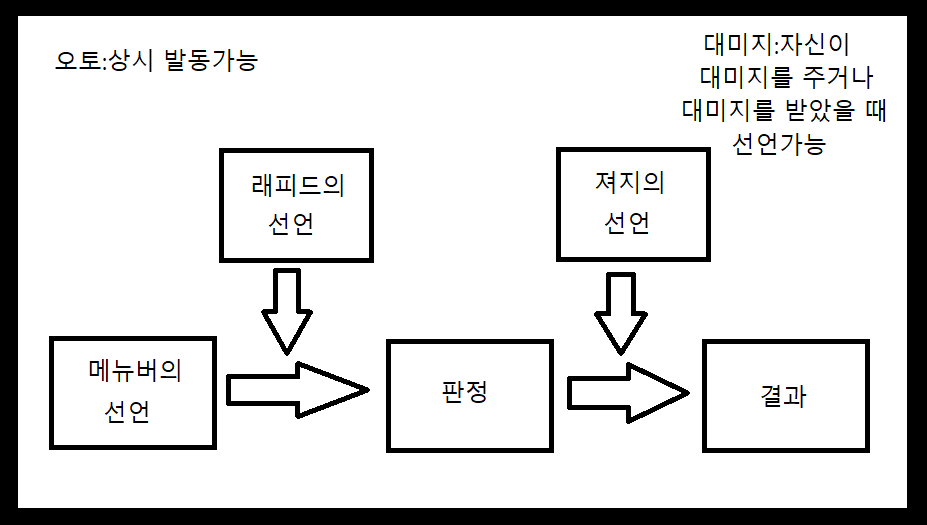

타이밍
네크로니카의 배틀에서는 오토, 래피드, 액션, 져지, 대미지의 다섯가지 타이밍이 존재한다. 오토:패시브, 언제나 발동이 가능하다. 래피드:다른 액션이나 래피드의 선언이 있었을 때, 판정하기 전, 그 앞에 끼어들어 사용가능하다. 액션:액티브, 자신의 턴이라면 몇번이라도 사용가능하다. 져지:어떠한 판정을 한 후, 그 후에 사용가능하다.주로 판정값에 관여한다. 대미지:자신이 대미지를 입히거나, 입었을 때, 사용가능하다.
네크로니카의 배틀에서는 오토, 래피드, 액션, 져지, 대미지의 다섯가지 타이밍이 존재한다. 오토:패시브, 언제나 발동이 가능하다. 래피드:다른 액션이나 래피드의 선언이 있었을 때, 판정하기 전, 그 앞에 끼어들어 사용가능하다. 액션:액티브, 자신의 턴이라면 몇번이라도 사용가능하다. 져지:어떠한 판정을 한 후, 그 후에 사용가능하다.주로 판정값에 관여한다. 대미지:자신이 대미지를 입히거나, 입었을 때, 사용가능하다.
전투의 무대는 다섯 종류의 영역으로 나뉜다. 이하의 설명은 돌을 기준으로 한 것. 낙원:가장 가까운 영역. 이곳에서 도망이 가능하다. 꽃밭:낙원과 연옥 사이의 영역. 연옥:무대의 가장 중앙인 영역. 지옥:나락과 연옥 사이의 영역. 나락:가장 먼 영역. 이곳에서 적이 도망칠 수 있다. 돌은 이 중에서 낙원, 꽃밭, 연옥에 초기배치가 가능하다.
공격n: 이동n 지원n 방해n 방어n 절단: 서번트나 돌의 경우, 절단판정을 행하여, 실패시 그 부위의 파츠가 전부 파손된다. 호러나 레기온의 경우, 받을 대미지가 두배가 된다. 폭발: 서번트나 돌의 경우, 대미지를 받은 부위 근처의 부위(ex:머리의 경우 팔, 팔의 경우 머리와 몸)에 추가대미지를 받는다. 호러나 레기온의 경우, 받을 대미지가 두배가 된다. 연격n: 연격은 연격n(n은 정수)으로 되어있는데, 연격이 있는 메뉴버의 판정의 성공할 경우, 최대n번만큼 추가판정이 가능하다. 전체공격: 공격대상이 있는 에리어의 모든 존재에게 효과가 적용된다. 넘어짐: 대상의 행동치를 -2한다.
전투에서의 시간은 턴과 카운트라는 단위로 되어있다. 한 턴이 최대 20개의 카운트로 구성되어있다. 전투가 시작하면, 전투의 참가자 중 가장 높은 행동치를 기준으로 카운트가 시작된다. 이 후로부터 카운트가 1씩 줄어들어, 0까지 가게되면 한 턴이 종료된다. 다음 턴이 시작하면 전투참가자 전원의 최대행동치만큼 회복하고, 다시 가장 높은 행동치를 기준으로, 카운트가 시작된다. 단, 최대행동치로 회복하는 것이 아닌, 최대행동치만큼이다. 최대행동치를 높이는 파츠가 손상되었다면 최대행동치가 감소하기에, 회복하는 행동치가 줄어든다.
카운트가 자신의 현재 행동치와 같아진 전투 참가자는, 소유한 [액션]타이밍의 메뉴버를 사용하는 것이 가능하다. 혹은 사용하지않고 그저 대기할 수 도 있다.-이 때 행동치는 1점감소한다. 메뉴버를 사용했다면 해당 메뉴버의 코스트만큼 행동치가 감소하게된다. 카운트가 줄어들고, 감소한 행동치와 같은 카운트가 되었다면, 다시 [액션]타이밍의 메뉴버를 사용할 수 있게된다. [져지],[대미지],[래피드]타이밍의 메뉴버는 현재의 카운트와 상관없이, 타이밍의 조건에 맞다면 언제라도 사용할 수 있다. 단, 이 세 타이밍의 메뉴버는 한턴에 한번만 사용이 가능하다. 코스트를 지불하면 행동치가 0보다 작아지는 상황이라도, 메뉴버의 사용은 가능하다. 물론, 그 후의 행동치는 음수가 되어, 다음 턴에는 그만큼 적은 행동치로 시작하게 된다. 행동치가 0이하가 된 전투 참가자는 [오토]타이밍 이외의 메뉴버는 사용할 수 없다.